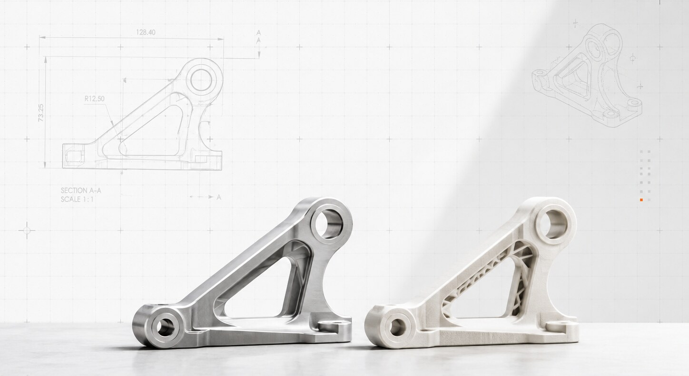
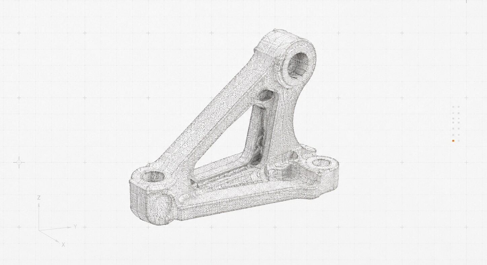
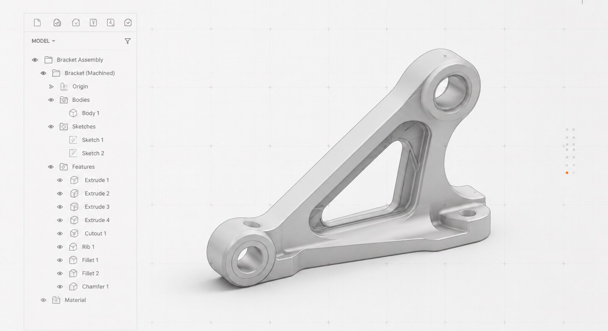
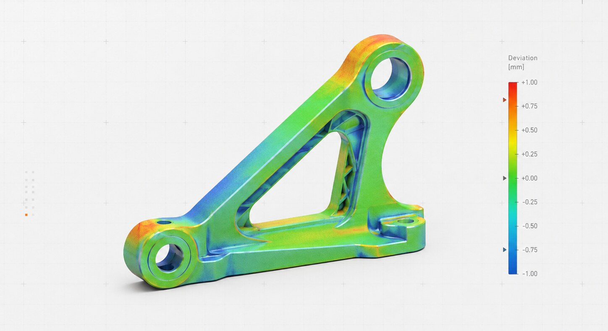
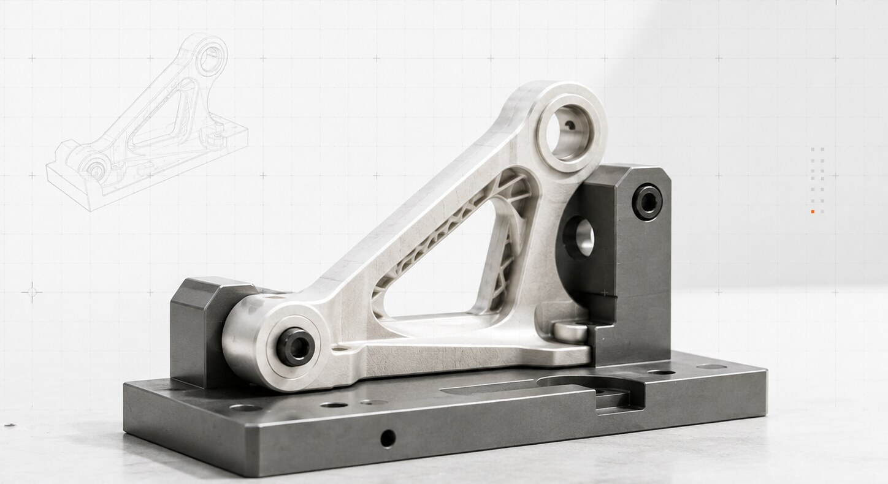

Example content. This page demonstrates the structure of a project write-up. Values are placeholders until a real project is documented.
The customer needed more of a bracket that had been made once, years earlier, by a shop that no longer existed. One sample remained in service. There was no drawing, no model, and no record of the material.
The functional requirements were clear: two bores had to hold their center distance and stay parallel, a two-hole foot had to match an existing plate, and the truss web had to clear a neighbouring component. Everything else was a consequence of how the original had been machined.
The bracket was scanned in several orientations and the scans merged into a single mesh. Bore diameters, the bore center distance, and the foot hole positions were measured separately with probing and gauges, because those features carried the tolerances and a scan alone is not the right instrument for them.


The model was rebuilt as a parametric part with the large bore axis as the primary datum and the foot face as the secondary. Bores were modeled at nominal, not at the measured diameter of a used part. Fillets and the web pocket were rationalized to consistent radii where the original varied from tool to tool. The feature tree is short on purpose: four extrudes, one cut, one rib, two fillets, one chamfer.

The finished model was compared to the scan. Deviations on the bores and foot were within the planned tolerance. The largest deviations occurred on the outer fillets and were expected, since those had been rationalized. A prototype was printed and seated in a fixture that reproduced the customer's mounting interface, then a first article was machined from 6061 billet.
| Feature | Nominal | Measured (sample) | Model − scan | Note |
|---|---|---|---|---|
| Large bore ∅ | 20.000 | 20.04 | ±0.03 | Sample worn; modeled at nominal |
| Small bore ∅ | 12.000 | 12.01 | ±0.02 | — |
| Bore center distance | 96.500 | 96.48 | ±0.03 | Verified by probing |
| Bore parallelism | 0.05 | 0.03 | — | — |
| Foot hole spacing | 48.000 | 47.99 | ±0.02 | — |
| Outer fillet R | 12.500 | 11.8–13.1 | ±0.60 | Cosmetic; rationalized |
All values in millimetres. Illustrative until replaced with project data.


The customer received a native CAD model, a STEP file, a dimensioned drawing with GD&T on the bores and foot, the deviation report, and one machined bracket that fit. The drawing package now allows the part to be reordered from any competent shop.